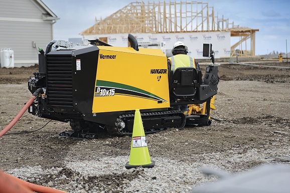
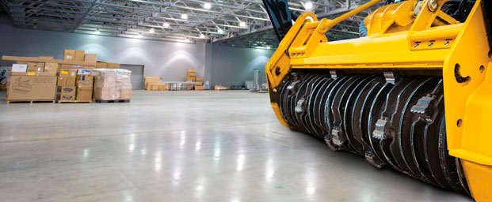

Производительность бурения приобрела новое определение с появлением установки D9x13 S3, которая имеет модернизованную станцию машиниста и упрощенное управление джойстиками. И станция машиниста, и джойстики являются общими для всей линейки установок ГНБ Navigator® корпорации Vermeer. Поколение S3 – speed, sound, simplicity разработанно пройдя серьезные испытания в условиях различного грунта.
Установки для прокладки коммуникаций и магистральных трубопроводов
Методом разработки траншей или горизонтального бурения
Получите экономическое обоснование нашей технологии
Оставьте свои контактные данные, наш эксперт позвонит в течение 30 минут и поможет подобрать технику, обеспечущую максимальную рентабельность.
-
1
Окупаемость
Полностью окупается в кратчайшие сроки
-
2
Расходы

Низкие эксплуатационные расходы
-
3
Ликвидность

Самая высокая ликвидность на вторичном рынке
-
4
Ресурс
Самый большой ресурс эксплуатации
Если нужно проложить коммуникации, не повреждая наземные сооружения - Установки горизонтально-направленного бурения
Видео
Прошедшие испытания на способность справляться с самыми тяжелыми работами по прокладке коммуникаций большого диаметра, установки Vermeer для горизонтального направленного бурения обладают всеми характеристиками, необходимыми для выполнения работы. Семейство мощных буровых установок Vermeer позволит пересечь самые бурные реки и победить самые твердые скалы.
Для своих буровых установок, сконструированных с учетом отзывов пользователей, столкнувшихся с уникальными по сложности задачами по прокладке трубопроводов, корпорация Vermeer обеспечивает экспертный уровень обслуживания и поддержки через свою сеть прошедших заводскую подготовку дилеров и технических специалистов.
-
Значительно дешевле траншейного способа
-
Установка способна пробурить до 2000м без выхода на поверхность
-
Диаметр бурового отверстия до 2 метров
-
Можно сразу прокладывать коммуникации
-
Комплектующие от ведущих производителей
-
Гидромоторы без редукторов, а значит - без потери мощности
-
Системы безопасности оператора и защиты от поражения током
-
Самые маленькие габариты при схожей мощности
D9x13 S3 Tier 4i (EU Stage IIIB)

D10x15 S3 Navigator
Представляем новое направление в горизонтальном направленном бурении (ГНБ). Установка D10x15 S3 обладает еще большей мощностью и производительностью по сравнению с младшей моделью D9x13 S3. Это надежное, выгодное с экономической точки зрения решение для выполнения небольших проектов по прокладке коммуникаций — создано с целью повышения производительности бригады, что позволяет быстрее переключаться с одной работы на другую. Благодаря значительным преимуществам в мощности, скорости и снижению уровня шума, установка D10x15 S3 поможет проложить больше коммуникаций за меньший промежуток времени.
D20x22 S3
Следующая новинка в поколении S3 буровых установок – установка D20x22 S3 – обладает большей мощностью, увеличенной скоростью, универсальностью и точностью управления. Благодаря сбалансированной мощности и приемлемой цене установка D20x22 S3 обеспечивает значительные преимущества с точки зрения мощности и скорости выполнения работ как по сравнению с конкурентами, так и со своим предшественником – установкой D16x20 серии II.
После тщательного знакомства с потребностями подрядчиков, выполняющих работы в густонаселенных городских районах, нашей целью стало создание следующего поколения буровой установки S3, которое бы идеально подходило вам для выполнения работ — независимо от того, прокладываете ли вы кабель, оптоволоконные линии или трубопроводы.
Обладающая усилием продавливания и протяжки порядка 89 кН и оснащенная двигателем Deutz Tier 4, который обеспечивает увеличение мощности на 12% по сравнению с предшествующей моделью (D16x20 Серии II), установка D20x22 S3 является следующим ключевым пополнением вашего парка буровых установок.
D23x30 S3
Знакомьтесь: новое направление в ГНБ — установка горизонтального направленного бурения D23x30 S3 Navigator® одна из самых тихих на рынке ГНБ. Благодаря возможности оснащения на выбор двигателями Deutz Tier 4 Final или Tier 3 (EU Stage IIIA) мощностью 75 кВт, установка D23x30 S3, несмотря на свои малые размеры, обеспечивает скорость и мощность, позволяющие увеличить производительность при работе в условиях ограниченного пространства в городе или на промышленных объектах. Развивая усилие при продавливании и обратной протяжке, равное 107 кН, и момент вращения, равный 4067,5 Нм, что значительно превышает аналогичные характеристики ее предшественника (установки D20x22 серии II), установка D23x30 S3 без лишнего шума позволяет операторам наилучшим образом выполнять стоящие перед ними трудные задачи.
D24x40 S3
Представляя новое направление в горизонтальном направленном бурении (ГНБ), установка D24x40 S3 с гордостью продолжает традиции надежности, присущие ранее выпущенным машинам. С выпуском установки D24x40 в 1993 году было положено начало промышленного стандарта, а в 2015 году выпуск ее новой модификации дает еще больше оснований для этого. Она является заслуживающим доверия выбором, отвечающим потребностям подрядчиков, благодаря своим оптимальным размерам и оптимальной мощности.
Установка D24x40 S3 с усилием продавливания и обратной протяжки, равным 125 кН, и крутящим моментом в 5694 Нм, — превышающими аналогичные параметры ее предшественника (D24x40 серии II), — помогает максимально увеличить производительность машины и эффективность выполнения работ на рабочей площадке. Кроме того, благодаря своему самому короткому в отрасли времени выполнения циклов, она позволяет ускорить выполнение работ.
D24x40S
В числе последних новинок, презентованных всемирно известной компанией Vermeer – ГНБ-установка D24x40S. При ее разработке особое внимание было уделено повышению мощности и универсальности эксплуатации. Изучив технические характеристики D24x4S, можно сделать вывод, что с поставленными перед ними задачами разработчики полностью справились
D40x55 S3 10’
Знакомьтесь: новое направление в горизонтальном направленном бурении (ГНБ). Многофункциональная буровая установка D40x55 S3 обладает исключительной производительностью, ведущим в классе временем выполнения производственных операций, а также комплектуется несколькими вариантами буровых штанг, что обеспечивает возможность ее использования для выполнения работ различного назначения – от прокладки оптоволоконных коммуникаций большой длины до трубопроводов небольших диаметров.
Развивая усилие при продавливании и обратной протяжке, равное 177,9 кН, и момент вращения, равный 7457 Нм, – на 10 % превышающие аналогичные характеристики предыдущей модели (D36x50 серии II) – установка D40x55 S3 позволяет максимально увеличить производительность при выполнении работ на площадке.
D60x90 S3 Navigator
Наша новейшая модель буровой установки серии S3 — D60x90 S3 — представляет следующее поколение мощности и управления. Созданная с учетом простоты и удобства эксплуатации для машиниста эта установка значительно мощнее и тише, чем предшествующая модель — оснащена интерактивным цифровым дисплеем Aurora™, помогающим выполнить работу быстрее и эффективнее.
Установка D60x90 S3 обладает всеми этими ценными преимуществами и при этом имеет малую площадь основания, что делает ее идеальной для выполнения работ как на площадках, где реализуются крупные коммерческие проекты, так и при выполнении проектов в густонаселенных городских районах.
Благодаря усилию продавливания и обратной протяжки до 267 кН — впечатляюще увеличенной мощности (на 13 кВт) по сравнению с предыдущей моделью (D60x90) — D60x90 S3 является буровой установкой, которая обеспечит новый уровень производительности при выполнении работ.
D60x90S
Универсальная установка D60x90S произведенная на заводе Vermeer в Китае объединяет в себе исключительную производительность и лучший в своем классе показатель времени завершения рабочего цикла, что делает ее отличным решением для прокладки различных материалов – от протяженных секций оптоволокна до легковесных трубопроводов. Благодаря усилию продавливания и обратной протяжки в 266,9 кН, а также крутящему моменту 12 200 Нм, установка D60x90S поможет максимально увеличить производительность на рабочей площадке. Она существенно дешевле американского аналога Vermeer при сравнимом качестве.
D100x140 S3 20 NAVIGATOR
Нет другого способа кроме как повышать мощность, доставляемую к месту бурения. Благодаря максимальному вращающему моменту в 18 981 Нм и развиваемым оборотам до 203 об/мин, установка горизонтального направленного бурения D100x140 S3 Navigator® обеспечивает «атаку с двух сторон» для наиболее трудных в реализации проектов клиентов. Для успешного выполнения работ выбирайте буровые штанги Firestick® длиной 4,6 м или 6,1 м и диаметром 8,9 см. Использование штанг длиной 4,6 м сводит к минимуму площадь, занимаемую буровой установкой, а выбор штанг длиной 6,1 м позволяет перевозить большее количество штанг на машине.
D100x140 S3 15 NAVIGATOR
Нет другого способа кроме как повышать мощность, доставляемую к месту бурения. Благодаря максимальному вращающему моменту в 18 981 Нм и развиваемым оборотам до 203 об/мин, установка горизонтального направленного бурения D100x140 S3 Navigator® обеспечивает «атаку с двух сторон» для наиболее трудных в реализации проектов клиентов. Для успешного выполнения работ выбирайте буровые штанги Firestick® длиной 4,6 м или 6,1 м и диаметром 8,9 см. Использование штанг длиной 4,6 м сводит к минимуму площадь, занимаемую буровой установкой, а выбор штанг длиной 6,1 м позволяет перевозить большее количество штанг на машине.
D130х150S
Будучи разработанной специально для масштабных проектов в области горизонтального направленного бурения, модель D130x150S обладает мощью, крутящим моментом, усилием обратной протяжки и всеми другими функциями, которые удовлетворят нужды даже самых требовательных буровых проектов. Помимо этого она поддерживает все стандартные функции, повышающие комфорт машиниста и увеличивающие производительность.
D220x300 S3
Установка горизонтального направленного бурения D220x300 S3 Navigator® корпорации Vermeer успешно справляется с любой задачей и помогает на любой рабочей площадке, независимо от того, выполняете ли вы работы в сложных условиях сельского ландшафта или в густонаселенных городских районах. Автономная установка D220x300 S3 оснащена двигателем Tier 4 Final, имеет усилие продавливания/обратной протяжки 1077 кН, обеспечивая подрядчиков возможностями для максимального повышения производительности. Система управления парком оборудования InSite™ обеспечивает доступ к данным установки, позволяя контролировать бурение даже находясь’ на большом удалении. Кроме того, установка D220x300 S3 имеет просторную кабину машиниста и станцию управления со сдвоенными джойстиками, одинаковыми для всех машин линейки Navigator, что упрощает профессиональную подготовку машинистов при переходе для работы с одной буровой установки на другую. Буровая установка оснащена дополнительным насосом для подачи бурового раствора.

D220x300S
Установка DD220x300S произведенная на заводе Vermeer в Китае объединяет в себе исключительную производительность - обладая тяговым усилием около 100тонн и остается в допустимых габаритах для осуществления перевозки на строительные объекты. Дополнительное удобство в работе дает буровой насос расположенный на борту установки, в отличие от американского аналога D200x300. Буровая штанга длиной 6,1 м позволяет использовать установку в стесненных условиях. Благодаря максимальному усилию продавливания / обратной протяжки в 978,6 кН, данная установка обеспечивает подрядчиков необходимой мощностью для максимального увеличения производительности в разных грунтах и в разных условиях
D330x500 NAVIGATOR
Обладая утвержденными размерами в транспортном состоянии, установка D330x500 перемещается на рабочие площадки в любое время суток. Автономная конструкция позволяет быстро привести установку в рабочее состояние. Дизельный двигатель Caterpillar C-15 Tier 3 мощностью 363 кВт обеспечивает крутящий момент в 67 800 Нм и усилие продавливания/протяжки в 1 468 кН. Не смотря на свои размеры и мощность - управление бурением, подачей бурового раствора, перемещением и краном осуществляется одним человеком из кабины.
D500x500 NAVIGATOR
Прошедшая испытания на способность справляться с самыми тяжелыми работами по прокладке коммуникаций большого диаметра установка D500x500 обладает всеми характеристиками, необходимыми операторам ГНБ для выполнения работы. Создавая крутящий момент в 68 000 Нм и усилие продавливания/протяжки в 2 224 кН, эта установка способна бурить практически в любом грунте.
D750x900 NAVIGATOR
Созданная для надежной работы, прошедшая полевые испытания установка D750x900 оптимизирована для бурения скважин большого диаметра. Она оснащена позволяющими проникать через любые породы сдвоенными двигателями Caterpillar C-18, создающими максимальный крутящий момент в 125 120 Нм и усилие продавливания/обратной протяжки в 3336 кН.
D1000x900 NAVIGATOR
Обеспечьте себе максимальную мощность бурения с испытанной в полевых условиях установкой D1000x900. Обладающая множеством функций повышения производительности, надежности и долговечности установка D1000x900 оснащена двумя главными двигателями Caterpillar C-27, создающими максимальный крутящий момент в 125 120 Нм и усилие продавливания/протяжки в 4 448 кН.
D1320x900 NAVIGATOR
Обеспечьте себе максимальную мощность бурения с испытанной в полевых условиях установкой D1320x900. Обладающая множеством функций повышения производительности, надежности и долговечности установка D1320x900 оснащена двумя главными двигателями Caterpillar C-27, создающими максимальный крутящий момент в 138 971 Нм и усилие продавливания/обратной протяжки в 616 885 кН.
Если нужно проложить коммуникации на большие расстояния - Траншеекопатели
Видео
Прошедшие испытания на способность справляться с самыми тяжелыми работами по прокладке коммуникаций большого диаметра, установки Vermeer для горизонтального направленного бурения обладают всеми характеристиками, необходимыми для выполнения работы. Семейство мощных буровых установок Vermeer позволит пересечь самые бурные реки и победить самые твердые скалы.Для своих буровых установок, сконструированных с учетом отзывов пользователей, столкнувшихся с уникальными по сложности задачами по прокладке трубопроводов, корпорация Vermeer обеспечивает экспертный уровень обслуживания и поддержки через свою сеть прошедших заводскую подготовку дилеров и технических специалистов.
-
Коммуникации можно проложить на любые расстояния
-
В некоторых случаях этот способ быстрее чем ГНБ
-
Ширина траншеи до 3.4 метра
-
Можно сразу прокладывать коммуникации
-
Комплектующие от ведущих производителей
-
Гидромоторы без редукторов, а значит - без потери мощности
-
Системы безопасности оператора и защиты от поражения током
-
Самые маленькие габариты при схожей мощности

RTX130
Будь то оптоволоконная линия, ирригационная линия или любая другая инженерная коммуникация, RTX130 превосходно оборудован для работы на ваших сложных площадках. Приводимая в действие двигателем Honda мощностью 9,7 кВт, эта установка обеспечивает глубину рытья 76 см и способна маневрировать в условиях ограниченного пространства при ширине площадки всего 89 см. Интуитивный дизайн уникального двухрычажного рулевого управления VZ позволяет упростить движение в условиях сложного грунта. Данную машину можно оснастить шинами или гусеницами, что обеспечивает машинисту гибкость для решения задач на стройплощадке.
RTX250
Новейший представитель линейки пешеходных траншеекопателей Vermeer является производительной и удобной в обслуживании машиной, позволяющей выполнять работу надлежащим образом. Пешеходный траншеекопатель RTX250 оснащен двигателем мощностью 18,6 кВт с электронной системой впрыска топлива (ЭСВ), позволяет копать траншеи глубиной 121,9 см и максимальной шириной 20,3 см и имеет профиль малой ширины, что позволяет ему заезжать во дворы через узкие ворота.
PTX40
Пешеходный плуг/траншеекопатель PTX40 с расположенной посредине точкой сочленения разработан для прокладки оптоволоконных, электрических, газовых коммуникаций и ирригационных систем и соответствует требованиям подрядчиков по прокладке подземных коммуникаций, муниципалитетов и специалистов по озеленению. Приводимая в действие бензиновым двигателем Kubota с водяным охлаждением и мощностью 34,9 кВт установка PTX40 обеспечивает улучшенное тяговое усилие и повышенную мощность по сравнению с предыдущей моделью LM42, предназначенной для использования с навесным оборудованием для вспахивания и рытья траншей.
PTX44
Самоходный трактор PTX44 с расположенной посредине точкой сочленения разработан для прокладки оптоволоконных, электрических, газовых коммуникаций и ирригационных систем. Это универсальная машина, которая удовлетворяет требованиям подрядчиков, выполняющих работы по прокладке подземных инженерных коммуникаций, а также муниципальных и ландшафтных специалистов. Приводимый в действие бензиновым двигателем Kubota с водяным охлаждением мощностью 34,9 кВт трактор PTX44 обеспечивает крутящий момент 120,2 Нм для плуга, траншеекопателя и бура.
RTX200
Будь то прокладка линии электропередач, водопровода или других инженерных коммуникаций, пешеходный траншеекопатель RTX200 справится со сложными условиями на вашей стройплощадке. Благодаря интуитивно-понятным и улучшенным возможностям двухрычажного рулевого управления VZ, машинист может работать в условиях сложных и неоднородных ландшафтов. Траншеекопатель RTX200 оснащен двигателем Kohler мощностью 15,3 кВт и обеспечивает мощный крутящий момент для рытья с максимальной глубиной 91 см. Имея ширину 89 см, эта машина способна проходить через узкие пространства, например обычные ворота на заднем дворе. Поставляемая в конфигурациях с колесами или гусеницами, эта машина способна справиться с множеством различных ландшафтов и стройплощадок.
RTX450
Благодаря добавлению RTX450 в линейку оборудования RTX, подрядчики могут выбирать из полной линейки машин корпорации Vermeer с четырьмя гусеницами оборудование, которое позволит им максимально увеличить производительность при выполнении работ в неблагоприятных условиях. RTX450 предлагается в трех конфигурациях: с мостом для работы в нормальных условиях с шинами 66 см или с усиленным мостом для работы в тяжелых условиях с шинами 74 см и четырьмя гусеницами. Трактор также оснащен органами управления, одинаковыми для всех машин линейки RTX.
RTX550
Оснащенный, по выбору покупателя, резиновыми шинами или счетверенными гусеницами, RTX550 подходит для большинства типов местности. А широкий выбор навесных приспособлений, таких как траншеекопатель, вибрационный плуг и скальный дисковый резак ’ позволяет выполнять практически любые виды работ. Встроенный системный дисплей делает работу удобной, а дизельный двигатель Cummins мощностью 65 л.с. (48,5 кВт) дает необходимую силу.
RTX750
Самоходный трактор RTX750 Vermeer способен на рабочей площадке на большее, чем от него ожидают. Самоходный трактор RTX750 — это компактная производительная машина, которая прекрасно подходит для выполнения широкого спектра работ в условиях ограниченного пространства. Резиновые шины могут быть заменены четырехгусеничной системой, что позволяет подрядчику выбирать оптимальную конфигурацию в зависимости от площадки, на которой будут выполняться работы, при этом рулевое управление всеми четырьмя колесами придает машине исключительную маневренность. Арсенал навесных приспособлений, в том числе дисковые резаки, плуги, комбинированные устройства и траншеекопатели — это все необходимые инструменты, помогающие выполнить работу.
RTX1250i2
RTX1250i2 — это образец инновационной техники, построенный на базе фирменных технологий Vermeer, известных своей высокой надежностью и прочностью. С этим самоходным трактором вы сможете быстро и эффективно проложить любые коммуникации: газовые, волоконные, водные, электрические и прочие. Взаимозаменяемые детали делают трактор универсальной машиной — на него можно установить четыре гусеницы или колеса, а также различное интеллектуальное навесное оборудование, например траншеекопатель или экскаватор, которое автоматически определяется трактором. Помимо прочего, в вашем распоряжении имеется встроенная система диагностики и другие функции, которые помогут при работе с твердым грунтом и на сложной местности.
SPX25
Вибрационный плуг SPX25 производства корпорации Vermeer – идеальная установка для подрядчиков, занимающихся прокладкой кабелей, оптоволоконных сетей и мелиорацией. Плуг оснащен полнофункциональной системой дистанционного управления, которая обеспечивает лучшую маневренность машины на небольших площадках и площадках ограниченных размеров. Оснащенная газовым двигателем Kohler мощностью 18,6 кВт эта машина обладает необходимой мощностью для прокладывания трубопроводов небольшого диаметра и кабелей на глубину 30,5 см или меньше, а также бурения под проезжей частью и тротуарами.
T1155
Траншеекопатель T1155 COMMANDER® 3 – совершенная машина для рытья в скальном грунте. Машина представляет собой эффективное сочетание прочной конструкции, мощности 402,7 кВт, развиваемой двигателем Caterpillar C15 ACERT Tier 3 с турбонагнетателем и суперсовременной электронной системы.
T1255
Мощный траншеекопатель T1255 COMMANDER® 3 производства корпорации Vermeer обеспечивает всю необходимую мощность для рытья в скальном грунте траншей под трубы большого диаметра. Будучи оснащенным двигателем Caterpillar C18 ACERT Tier 3 мощностью 447 кВт, этот мощный траншеекопатель позволяет прокладывать магистральные трубопроводы.
T555III
Оснащенный плавноработающим дизельным двигателем John Deere PowerTech E Tier 3 или Tier 4 Final мощностью 138 кВт трактор T555III способен рыть траншеи в самых тяжелых условиях по всему земному шару. На T555III применяется программное обеспечение SmartTEC, доступное на всех машинах, оснащенных контролируемой компьютером системой управления Vermeer TEC® Plus, которая помогает оптимизировать производительность при выполнении работ с помощью советов по управлению машиной в режиме реального времени. Трактор T555III поставляется со стрелой для траншеекопателя 1,2 м, 1,5 м, 1,8 м или 2,4 м, которая позволяет рыть траншеи шириной до 61 см. Трактор может поставляться также и со скальным дисковым резаком с гидростатическим приводом, способным резать самый тяжелый скальный грунт на глубину до 91 см.
T558 COMMANDER 3
Полностью гидростатический траншеекопатель T558 COMMANDER 3 со скользящим механизмом смещения позволяет прокладывать траншеи вдоль дорог, бордюров, зданий и стен. Это единственный в своем классе траншеекопатель с механизмом смещения, способный прокладывать траншею снаружи от колеи своей левой гусеницы. Двигатель John Deere Tier 3 мощностью 138 кВт позволяет уверенно прокладывать в скалистых грунтах инженерные коммуникации и дренажные каналы большой протяженности, а также выполнять работы по закладке фундаментов и строительству шоссейных дорог. Оснащенный складным загрузочным конвейером, секционной стрелой и системой автоматической регулировки положения гусениц для компенсации наклона, траншеекопатель T558 COMMANDER® 3 со скользящим механизмом смещения обладает универсальностью, позволяющей успешно рыть траншеи в самых тяжелых условиях
T655 COMMANDER 3 /ковшовое колесо
Трактор T655 COMMANDER® 3, оснащенный навесным траншеекопателем, предназначенным для рытья траншей в тяжелых грунтах, или навесным ковшовым колесом, предназначенным для прокладки трубопроводов малого диаметра и большой протяженности, позволяет повысить производительность в мягких грунтах. Его дизельный двигатель Tier 3 John Deere 6090 HF обеспечивает мощность, достаточную для рытья траншей глубиной до 2,4 м. Низкоскоростной высокомоментный двигатель со шлицевым коренным валом повышает производительность рытья и минимизирует износ цепи, а эксклюзивная электронная система управления Vermeer TEC® Plus контролирует характеристики машины в реальном времени.
T755 COMMANDER 3
При рытье в тяжелом скальном грунте траншеекопатель T755 COMMANDER® 3 прочно стоит на грунте при тяговом усилии до 27215 кг. Адаптация секционной стрелы к условиям работы позволяет достичь лучших результатов, уменьшить износ зубьев и вибрацию.
T955
Для рытья траншей в самых твердых скальных грунтах корпорация Vermeer предлагает траншеекопатель T955 COMMANDER® 3, оснащенный дизельным двигателем Caterpillar C13 ACERT Tier 3 с турбокомпрессором мощностью 309,5 кВт. Благодаря специальному регулятору, при столкновении с тяжелым грунтом обороты двигателя снижаются с одновременным повышением крутящего момента и, соответственно, тягового усилия. Благодаря мощной цепи D6 и секционной стреле траншеекопателя, позволяющей регулировать глубину рытья, вместе с T955 на стройплощадку приходит мощь и универсальность.
Расширенная программа Гарантии на все машины
Расширенная программа обслуживания (Vantage Track Extended-Care Service Program) корпорации Vermeer предлагает дополнительную 3-летнюю/3000-часовую или 5-летнюю/5000-часовую гарантию на тяжелое оборудование для компонентов замкнутой гидрообъемной системы.
Чтобы Вы получили максимальную эффективность и рентабельность работы от этих машин необходим анализ и подробный расчет экономической модели вашего проекта
Оставьть свои контактные данные и наш эксперт перезвонит в течение 30 минут чтобы выяснить все детали и предоставить рассчет
16 дилерских центров в России и 1 в Белоруссии
А расположение сервисных центров - не более 150 км до самого дальнего клиента — позволяет оперативно реагировать на запросы заказчиков и оказывать необходимое сервисное обслуживание. Региональные площадки располагают службами продаж и сервиса, выставочными экспозициями техники и складами запасных частей.
Забронируйте удобные дату и время посещения ближайшего Выставочного центра Vermeer
Забронируйте удобные дату и время посещения ближайшего Выставочного центра Vermeer сейчас, чтобы там Вас сопровождал эксперт, который сможет ответить на любой вопрос

Поставка
техники со склада
в Европе за 3 недели
У корпорации Vermeer в Голандии расположен кластерный склад, на котором в большинстве случаев есть в наличии несколько единиц тяжёлой техники, более 20 единиц средней техники и полный ассортимент запасных частей. Если необходимая Вам техника в наличии, мы поставим её со склада в любой город России, включая таможенное оформление, за 3 недели.
98% ассортимента всех запасных частей есть на складе каждого нашего филиала
Склад запчастей есть в каждом филиале компании, что позволяет нам оперативно реагировать на заявки наших клиентов. В наличии всегда есть все необходимые запасные части на строительную технику Vermeer. Таким образом, замена поврежденных или изношенных деталей совершается своевременно, что, в свою очередь, повышает производительность и срок службы техники.
-
Расходные материалы и фильтры
-

Масла и смазки
-
Узлы и компоненты
-
Детали ходовой части и двигателей
-

Зубья, кромки и навесное оборудование
Если для устранения неисправности необходим наш эксперт - он прилетит к Вам даже если техника находится за 10 тысяч километров.